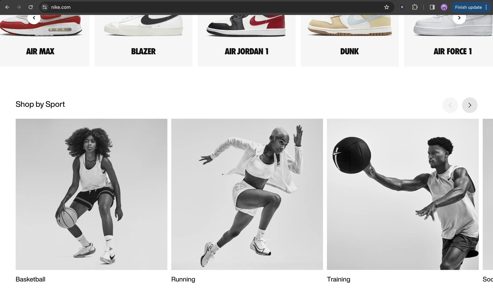
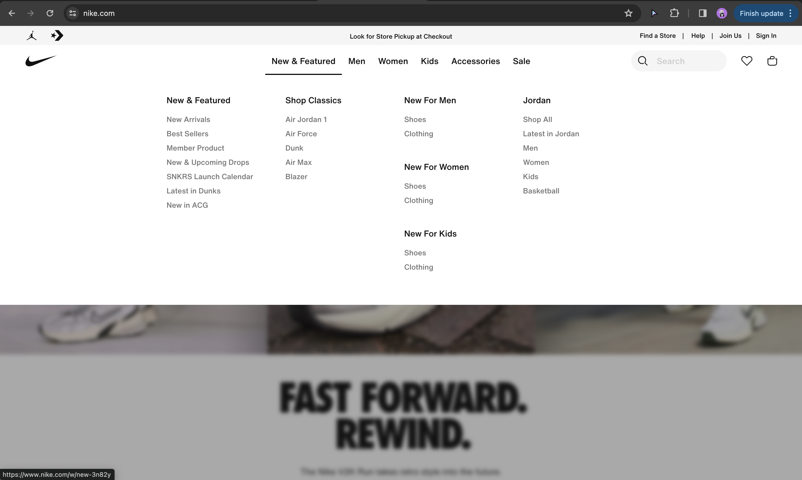
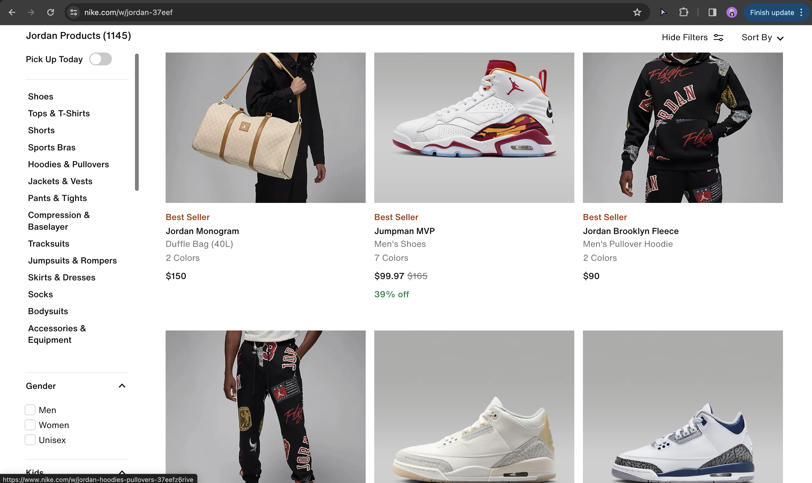

Nike.com is an e-commerce website with a primary purpose of selling Nike products, including athletic footwear, apparel, accessories, and equipment. The website also serves as a platform to inform customers about the latest product releases, technological innovations, and brand initiatives. The target audience for Nike.com includes athletes, fitness enthusiasts, fashion-conscious individuals, and anyone interested in sports and active lifestyle products. Nike aims to appeal to a diverse demographic, spanning different age groups and interests.

The content on Nike.com effectively contributes to the site's purpose by showcasing a wide range of products through high-quality images, detailed descriptions, and engaging multimedia content such as videos and interactive features. The text is generally easy to read, with clear and concise language used throughout the site.

Visually, Nike.com maintains a strong visual hierarchy, guiding users' attention towards featured products, promotions, and key brand messages. The design incorporates consistent color schemes, typography, and layout elements, creating a cohesive and visually appealing experience. The typefaces used are appropriate for the brand's image and audience.

In terms of interactivity and user experience (UX), the homepage of Nike.com effectively directs users to various sections of the website, including product categories, new releases, and special offers. The site provides easy navigation through clearly labeled menus, search functionality, and intuitive filtering options to help users find the content they're looking for. Interactivity is enhanced through features like product customization tools and interactive product demos.

Overall, Nike.com offers an enjoyable and seamless shopping experience for its users. However, there are always areas for improvement. One recommendation would be to further optimize the site for mobile devices, ensuring that it functions smoothly and maintains visual appeal across a variety of screen sizes. Additionally, providing personalized recommendations based on user preferences and browsing history could enhance the overall shopping experience and encourage repeat visits. Lastly, incorporating user reviews and ratings for products could help build trust and confidence among potential customers.